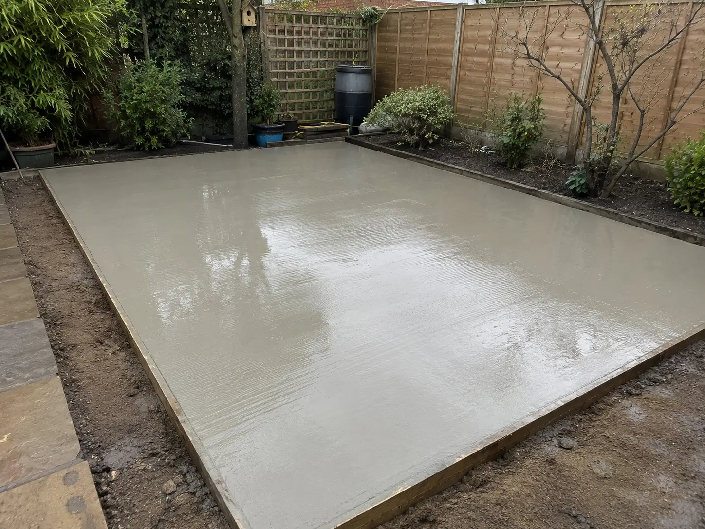
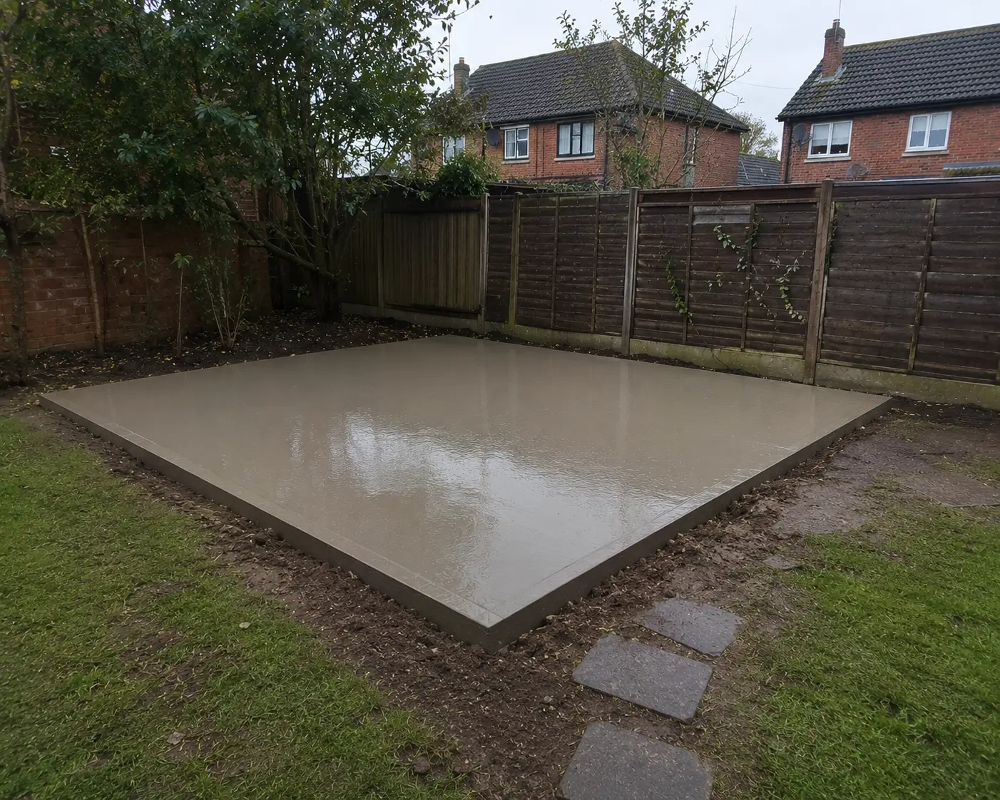

★★★★★
“Really pleased with the concrete base. Everything was explained clearly beforehand and the team prepared the area properly before the concrete was poured. The finished base was exactly what we needed for our garden building.”


We're a local Slough concrete base contractor with over 12 years of hands on experience
We Install strong foundational concrete bases for all types of garden buildings in Slough
We handle every part of the project so you dont need to worry about anything
The concrete we use gets tested for strength and supplied through established Berkshire batching plants.






Before we pour any concrete, we make sure the base is being installed on properly prepared ground. We assess the area, check the levels, establish the required dimensions and identify anything that could affect the finished base, such as soft ground, existing slabs, drainage or restricted access.
The ground is then excavated and prepared to the required depth before a suitable sub-base is installed and compacted. We make sure the area is properly levelled and formed so the concrete can be poured onto a stable foundation.
Once the preparation is complete, we set the formwork, check the levels and arrange the concrete supply according to the size and requirements of the job. Where the structure and ground conditions require it, reinforcement can also be incorporated into the base. The concrete is then poured, levelled and finished correctly.
We also consider drainage and finished levels before the installation is completed. This matters because water shouldn't sit against the base or potentially create problems around the structure, we make sure that the base is ready for your building to sit straight on top.
These are the most common garden structures we install concrete bases for across Slough. If you're installing one of these buildings, get in touch with us to discuss your project
Homeowners across Slough have used us for concrete bases for garden buildings, sheds, offices and other outdoor structures.
“Really pleased with the concrete base. Everything was explained clearly beforehand and the team prepared the area properly before the concrete was poured. The finished base was exactly what we needed for our garden building.”
“Very happy with the work. We needed a solid base for a new garden office and the whole process was straightforward. The ground was prepared and the finished concrete was level and ready for the building.”
“We had a concrete base installed for a new shed. The team handled
the preparation and concrete installation without any issues. They
kept us informed throughout
i would definitely recommend them to anyone in Slough”
“The service was very good from their frst site visit to completion. They came out, looked at the garden and explained what would be needed for the base. The installation was organised and the finished result was exactly what we were looking for.”
“We used them for a concrete base for our garden room. They took care with the measurements and made sure everything was prepared before the concrete arrived. The finished base was level and ready for the building.”
“Very straightforward experience. We had quite a tight area in the garden and they worked around the access without making the job unnecessarily complicated. The concrete base came out well and was ready for the structure to be installed.”
The type of concrete base we install depends on the building, the ground underneath and how the base needs to perform. For standard garden buildings, we normally use a reinforced concrete slab over a compacted sub-base.
If or where the ground is uneven or soft the construction of the base may need to be adjusted. This can either involve deeper excavation, additional sub-base preparation, increased slab thickness or reinforcement.
We assess this before we start pouring so the base installation suits the ground conditions and requirements of the structure going on top. The aim is always to put the right foundation system underneath the building and avoid having to correct any problems.